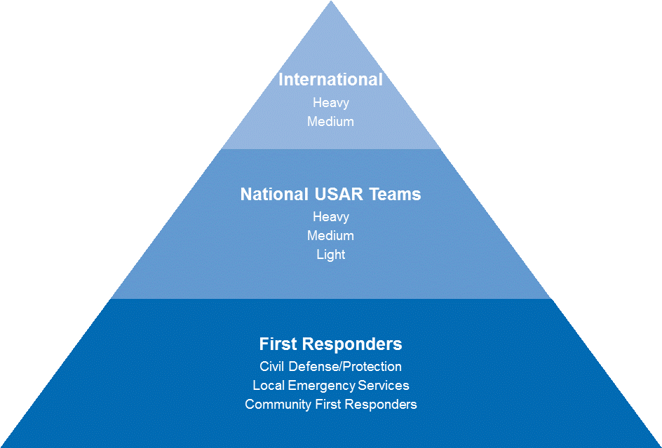
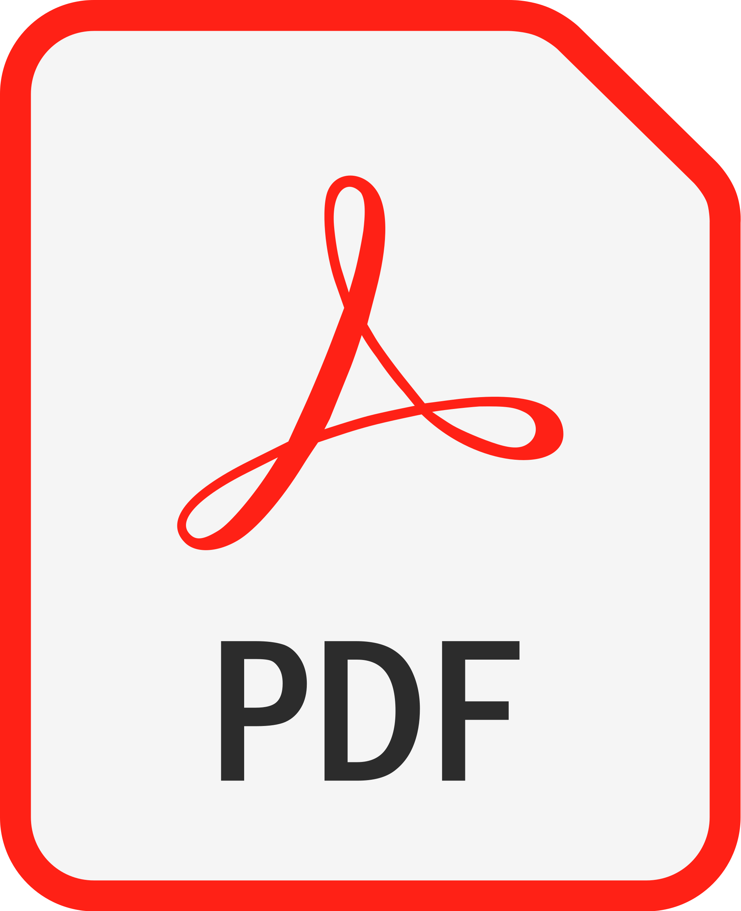

National Accreditation Process
The INSARAG Guidelines 2015 include a complete manual on strengthening national and local capacity building (Vol. II, Manual A) and recommend countries to establish a national USAR team accreditation mechanism to allow a country to “manage, monitor and establish the same standards officially and adhere closely to the INSARAG standards and guidance in developing its USAR national response systems”. This process has been worked on particularly since 2014 in a workshop carried out in Chile on “The creation of a national USAR team accreditation process” and many of the lessons learned in the Americas region in the past few years have been incorporated.
The INSARAG Americas Regional Group presented a proposal on this topic to the INSARAG Steering Group in 2016, who in turn requested the Regional Group to lead the initiative to “design a peer revision/certification process of national USAR team accreditation processes, which confirms to the requesting country that it is complying with the minimum standards for national USAR team accreditation processes” and present recommendations back to the Steering Group in 2017.
A National Accreditations Working Group was created in 2016, led by the Americas Regional Group with participation from other interested countries, and the proposal developed and consulted globally throughout 2016 was endorsed by the INSARAG Steering Group in 2017.
Classification vs Accreditation
The INSARAG Guidelines 2015 make the difference between the IEC classification – a process amongst peers, designed by the INSARAG community for the verification of the achievement of the standards for teams with an international deployment mandate; and the accreditation, a process which is by definition at the national level and through which the achievement of national standards is certified by an accrediting entity, in other words, the competent national authorities.
National accreditation process
The USAR response framework of INSARAG shows a structure, which aims to ensure interoperability between different levels of USAR response and determines that "it is vital that working practices, technical language and information are common and shared through all levels of the USAR response framework" (INSARAG Guidelines, Vol I, 2.1). Therefore, the standards developed for the accreditation of national teams must be aligned with the INSARAG methodology and therefore should be recognized within this same framework.
The 2015 INSARAG Guidelines provide a very general guidance on the establishment of a national USAR team accreditation process.
In addition to the Guidelines, here are additional and more detailed directions and tools for the design and implementation of a national accreditation process. This guidance will be incorporated in the next update of the INSARAG Guidelines, as endorsed by the INSARAG Steering Group in 2017.
NOTE: By definition, the national standards and processes shall be elaborated and promulgated at national level by the competent authority. This guidance is designed to promote the use of the INSARAG methodology by national authorities for its national teams and the national USAR response.
- Recommended minimum criteria and steps for the national USAR team accreditation processes. – These shall serve as guidance to national authorities who are in the process of establishing a national USAR team accreditation process.
- National standards: This is an updated version of Annex C of Manual A of the INSARAG Guidelines: “Capacity assessment checklist for national USAR team”. This updated version is more explicit with regards to standards applicable for light teams. They also include actual standards/ requirements on the national disaster management system (LEMA) with regards to the activation and coordination procedures for the national response.
- Supporting documentation: the following are a series of formats for the supporting documentation that national teams may wish to use in order to demonstrate that they are achieving the national standards.
| Supporting documentation | Definition | Guidance/recommended template |
| 1. Strategic plan of the institution | Organizational document, which explains and establishes the general and specific objectives, strategies, program lines, projects and corresponding resources, with a long-term planning horizon. It should include mission statement, vision and indicators | Format 1.1 |
| 2. Organizational model and structure (which contains the 5 components) | Document, which describes the organizational model of the teams and where all functions or positions of the organization are described. Profiles and responsibilities shall be specified, as well as the skills and abilities that are required for each of them. | Format 2.1 |
| 3. Annual operational plan which includes the annual and mid-term financial plan/ budget | Document containing guidance on the actions to be executed in the short term, and where budgetary and financial planning for the short and medium term sustainability of the team is described, in line with the strategic plan of the institution. | Format 3.1 |
| 4. Annual training and skills development plan | Training plan containing a database of courses or workshops held, and which defined objectives, goals, responsibility, resources, certifying entities, schedule, workload, curriculum, number of participants based on the expected minimum training for a team that chooses to be accredited according to the level that it applied for. It shall include the continuous learning/ re-certification plan. | Format 4.1 |
| 5. Safety, health and insurance and/or legal health benefits arrangements | Programs, processes and tools designed to provide teams and their members with coverage in the field of health, occupational safety, legal benefits and/or insurance; Including the annual and post-mission medical check-up. | Format 5.1 |
| 6. Agreements with providers of services and goods | Description of each of the duly signed, valid agreements, allowing for adequate maintenance and procurement of equipment, tools, supplies and services for the team functions. | |
| 7. Human resources management | Document where the organizational human resources policies are established. (Licenses, permits, sanctions, leave, etc.). | Format 7.1 |
| 8. Physical installations of the team | Details of each of the physical spaces that the team disposes of for its work (warehouses, stores, dorms, gym, kitchen, etc.) | |
| 9. Tools, equipment and accessories | Equipment, tools and accessories required for the corresponding operating level of the USAR Team. These shall be physically available, in good technical condition and have an operational registration/inventory system as well as a preventive and corrective maintenance service | |
| 10. Operational capacity and autonomy | Document in which the operational procedures, as well as the corresponding timeframe, is established, through which the different tasks of the USAR team are being carried out in line with the response cycle | |
| 11. Logistics | Document which describes the logistical requirements for the USAR team to function appropriately (food, lodging, transportation, etc.) | Format 11.1 |
| 12. ICT | Description of the ICT systems (eg. Fixed, portable and accessories) defined for the USAR team according to its level, its operational status, communications plan, operational registration/inventory system and the preventive and corrective maintenance. | Format 12.1 |
| 13. Activation & mobilization mechanisms & protocols | Activation and mobilization procedures of the USAR team | Format 13.1 |
| 14. Document/ information management | The information management forms that provide the documentation support for the USAR operations (INSARAG forms are recommended) | INSARAG forms |
---------------------------------------------------------------------------------------------------------------------------------------------------------------------------------------------------------
The Member States that have met the criteria for the National Accreditation Process(NAP) which ensures that National Urban Search and Rescue (USAR) teams meet the INSARAG standards, as specified in the INSARAG Guidelines of 2015.are listed below:
The simplified Flowchart outlining the steps to take for INSARAG NAP is attached here: 
| France | (June 2017) |
| Turkey | (November 2017) |
| Colombia | (November 2018) |
| Guatemala | (December 2018) |

- (Turkey National Accreditation Certification, Istanbul 2017)